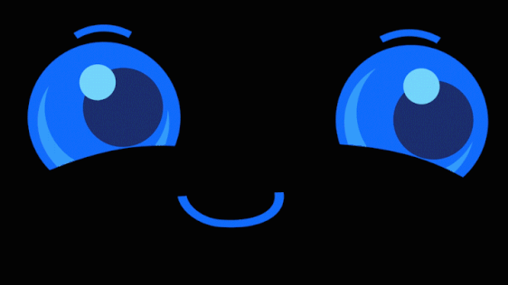

07:42

Ready to flash
Flash your clock
Pick your board, plug the clock into your computer with a USB cable, and install straight from the browser — no Arduino IDE needed.
Erasing wipes the whole chip, including saved settings/GIFs on an SD-less S3.
Before you click Install
- Use Chrome or Edge on a laptop or desktop — Web Serial isn't supported on mobile browsers.
- Connect the board's USB-C port directly to your computer (skip hubs if the port isn't recognized).
- If your OS asks which driver to use, pick the one matching your board's USB-to-serial chip (usually CP210x or CH9102).
- Click Install, choose the matching serial port from the browser prompt, and keep the tab open until it finishes. The full image writes bootloader, partition table and app in one go, so your FFat settings/GIFs on an SD-less S3 are left alone.
Serial Monitor
Not connected.
Opens its own port picker — pick the same board you just flashed. Disconnect here before clicking Install (a port can't be open in two places at once); flashing will also disconnect it for you automatically.